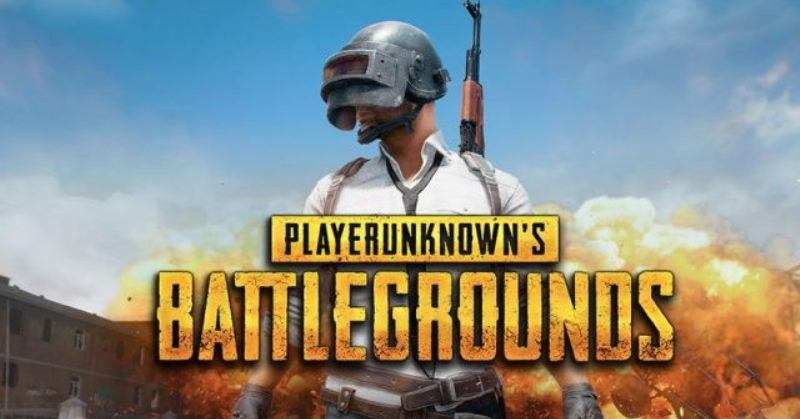

Many BOT for new player
It is undeniable that playing PUBG Mobile is easier to win than playing the PC version. Investigate a calibaration, it turns out many gamers who "feel" like fighting a bot. For example, when you meet other players. The player looks so stupid that he can't shoot you in the slightest, sometimes even just staying quiet when you catch him from behind.
On the other hand, sometimes if you have entered the top 5, then you will meet with other players. In addition, players who have reached silver rank and above claim that they rarely find bots. What is clear, maybe you can only show off your victory in your first few matches.